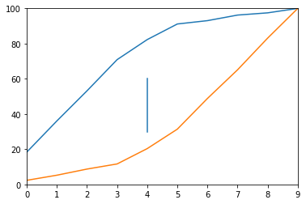

KS Metric
Contents
KS Metric¶
Kolmogorov-Smirnov metric (ks metric) is derived from K-S test. K-S test measures the distance between two plotted cumulative distribution functions (CDF).
To use it as a metric for classification machine learning problem we see the distance of plotted CDF of target and non-target.
The model that produces the greatest amount of separability between target and non-target distribution would be considered the better model.
import pandas as pd
from matplotlib import pyplot as plt
from sklearn.datasets import make_classification
from sklearn.linear_model import LogisticRegression
from sklearn.metrics import accuracy_score, f1_score, roc_auc_score
from sklearn.model_selection import train_test_split
# make sample dataset
X, y = make_classification(n_samples=1000, class_sep=0.5, random_state=0) # 1000 samples with 20 features
X[:2], y[:2]
(array([[-1.06377997, 0.67640868, 1.06935647, -0.21758002, 0.46021477,
-0.39916689, -0.07918751, 1.20938491, -0.78531472, -0.17218611,
-1.08535744, -0.49311895, 0.11523863, 0.06405769, -0.50655382,
-0.52749607, -0.0741832 , -0.35562842, 1.05721416, -0.40259159],
[ 0.0708476 , -1.69528125, 2.44944917, -0.5304942 , -0.93296221,
2.86520354, 2.43572851, -1.61850016, 1.30071691, 0.34840246,
0.54493439, -0.27467589, -0.0181811 , -0.19210097, -0.24468054,
0.9716812 , -1.79204799, 0.01708348, -0.37566904, -0.12323644]]),
array([0, 1]))
# split train-test
X_train, X_test, y_train, y_test = train_test_split(
X, y, test_size=0.33, random_state=42
)
print(f"{X_train.shape = }\n{y_train.shape = }\n\n{X_test.shape = }\n{y_test.shape = }\n ")
X_train.shape = (670, 20)
y_train.shape = (670,)
X_test.shape = (330, 20)
y_test.shape = (330,)
# simple Logistic Model
model = LogisticRegression(random_state=23)
model.fit(X_train, y_train)
LogisticRegression(random_state=23)
# predictions
y_train_pred = model.predict_proba(X_train)[:,1]
y_test_pred = model.predict_proba(X_test)[:,1]
KS Table¶
Group into Deciles¶
list(range(0,10,1))
[0, 1, 2, 3, 4, 5, 6, 7, 8, 9]
df = pd.DataFrame()
df["score"] = y_test_pred
# one hot encoding the dependent variable
df["class_0"] = 1 - y_test
df["class_1"] = y_test
# bucket/group prediction after ordering them
df["bucket"] = pd.qcut(df.score.rank(method="first"), 10, labels=list(range(0,10,1)))
df.head()
| score | class_0 | class_1 | bucket | |
|---|---|---|---|---|
| 0 | 0.152806 | 1 | 0 | 1 |
| 1 | 0.027964 | 1 | 0 | 0 |
| 2 | 0.082966 | 0 | 1 | 0 |
| 3 | 0.195532 | 1 | 0 | 2 |
| 4 | 0.952148 | 0 | 1 | 8 |
Goods-Bads Distribution¶
grouped = df.groupby("bucket", as_index=False)
ks_table = pd.DataFrame()
ks_table["min_score"] = grouped.min().score
ks_table["max_score"] = grouped.max().score
ks_table["n_class_0"] = grouped.sum().class_0
ks_table["n_class_1"] = grouped.sum().class_1
ks_table["n_total"] = ks_table.n_class_0 + ks_table.n_class_1
ks_table
| min_score | max_score | n_class_0 | n_class_1 | n_total | |
|---|---|---|---|---|---|
| 0 | 0.003576 | 0.102894 | 29 | 4 | 33 |
| 1 | 0.109209 | 0.190817 | 28 | 5 | 33 |
| 2 | 0.191658 | 0.256742 | 27 | 6 | 33 |
| 3 | 0.257778 | 0.353945 | 28 | 5 | 33 |
| 4 | 0.356250 | 0.463956 | 18 | 15 | 33 |
| 5 | 0.466864 | 0.670035 | 14 | 19 | 33 |
| 6 | 0.682374 | 0.830071 | 3 | 30 | 33 |
| 7 | 0.831854 | 0.909685 | 5 | 28 | 33 |
| 8 | 0.912608 | 0.973338 | 2 | 31 | 33 |
| 9 | 0.975036 | 0.998577 | 4 | 29 | 33 |
ks_table[['n_class_0', 'n_class_1',]].plot.bar(stacked=True)
<AxesSubplot:>
count_class_0 = df.class_0.sum()
count_class_1 = df.class_1.sum()
ks_table["cs_class_0"] = ((ks_table.n_class_0 / count_class_0).cumsum() * 100)
ks_table["cs_class_1"] = ((ks_table.n_class_1 / count_class_1).cumsum() * 100)
ks_table["cs_diff"] = ks_table["cs_class_0"] - ks_table["cs_class_1"]
ks_table
| min_score | max_score | n_class_0 | n_class_1 | n_total | cs_class_0 | cs_class_1 | cs_diff | |
|---|---|---|---|---|---|---|---|---|
| 0 | 0.003576 | 0.102894 | 29 | 4 | 33 | 18.354430 | 2.325581 | 16.028849 |
| 1 | 0.109209 | 0.190817 | 28 | 5 | 33 | 36.075949 | 5.232558 | 30.843391 |
| 2 | 0.191658 | 0.256742 | 27 | 6 | 33 | 53.164557 | 8.720930 | 44.443627 |
| 3 | 0.257778 | 0.353945 | 28 | 5 | 33 | 70.886076 | 11.627907 | 59.258169 |
| 4 | 0.356250 | 0.463956 | 18 | 15 | 33 | 82.278481 | 20.348837 | 61.929644 |
| 5 | 0.466864 | 0.670035 | 14 | 19 | 33 | 91.139241 | 31.395349 | 59.743892 |
| 6 | 0.682374 | 0.830071 | 3 | 30 | 33 | 93.037975 | 48.837209 | 44.200765 |
| 7 | 0.831854 | 0.909685 | 5 | 28 | 33 | 96.202532 | 65.116279 | 31.086253 |
| 8 | 0.912608 | 0.973338 | 2 | 31 | 33 | 97.468354 | 83.139535 | 14.328820 |
| 9 | 0.975036 | 0.998577 | 4 | 29 | 33 | 100.000000 | 100.000000 | 0.000000 |
fig, ax = plt.subplots(1,1)
ax.plot(ks_table["cs_class_0"])
ax.plot(ks_table["cs_class_1"])
ax.axvline(4, 0.3, 0.6)
ax.set_xlim([0.0, 9])
ax.set_ylim([0.0, 100])
plt.show()
